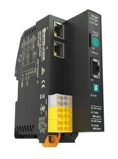
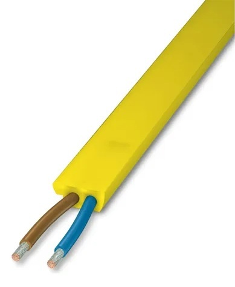

AS-I (ACTUATOR SENSOR INTERFACE)
ESTRUTURA FÍSICA E CABEAMENTO
AS-I EM REDES INDUSTRIAIS
A AS-Interface (AS-i) é uma rede industrial voltada principalmente à comunicação com sensores, atuadores e módulos de entradas e saídas instalados no nível de campo. Seu objetivo é simplificar a ligação de dispositivos distribuídos, substituindo grande quantidade de cabos individuais por um cabo de dois condutores compartilhado. A tecnologia é utilizada em máquinas, linhas de montagem, transportadores e sistemas que possuem muitos sinais discretos próximos ao processo.
A rede é organizada em torno de um mestre AS-i, que realiza a comunicação com os escravos conectados ao cabo. Os escravos podem ser módulos de entradas e saídas, sensores com interface integrada, atuadores e dispositivos específicos. Além da troca de dados digitais, existem perfis que permitem transportar sinais analógicos e informações de diagnóstico. A quantidade de dispositivos e os recursos disponíveis dependem da versão da especificação e do perfil de cada escravo.

MEIO DE TRANSMISSÃO E CABEAMENTO ADOTADO
CABO PERFILADO AS-I
A AS-i utiliza, tradicionalmente, um cabo de dois condutores, não trançado e sem blindagem, com perfil achatado e formato mecânico que facilita a montagem dos módulos por tecnologia de perfuração (piercing). O cabo perfilado, normalmente amarelo, permite que os dispositivos sejam conectados em diferentes pontos sem a necessidade de cortar e descascar os condutores. O formato também ajuda a evitar a inversão de polaridade quando são utilizados módulos e conectores compatíveis.
- Condutores AS-i+ e AS-i−: formam o par compartilhado utilizado para transmitir os dados e distribuir a alimentação do barramento aos dispositivos compatíveis.
- Cabo amarelo: é a identificação visual tradicional do cabo de comunicação e alimentação AS-i. A cor não substitui a verificação da polaridade e da identificação dos terminais.
- Cabo auxiliar preto: pode ser empregado para distribuir alimentação adicional, normalmente 24 Vcc, a atuadores ou circuitos que necessitam de corrente maior do que a disponível no barramento AS-i.

CONECTORES E TERMINAIS PADRONIZADOS
A conexão mais característica da AS-i utiliza módulos com contatos de perfuração que atravessam a isolação do cabo perfilado e estabelecem contato com os dois condutores. Esse método reduz o tempo de instalação e facilita a substituição ou reposicionamento de módulos. Também podem existir bornes de parafuso, conectores circulares M12 e cabos redondos em equipamentos específicos, conforme o fabricante e a aplicação.
- Contato por perfuração: realiza a ligação elétrica sem exigir o descascamento manual dos condutores, desde que sejam utilizados o cabo perfilado e os módulos compatíveis.
- M12 e conectores de campo: são utilizados frequentemente para ligar sensores, atuadores e módulos de E/S periféricos. A pinagem deve ser conferida no manual do equipamento.
O cabo perfilado possui uma geometria que orienta o posicionamento dos módulos e reduz a possibilidade de ligação invertida. Mesmo assim, a continuidade do cabo, a polaridade e a compatibilidade dos acessórios devem ser verificadas durante a montagem.
TOPOLOGIAS SUPORTADAS
TOPOLOGIA FLEXÍVEL
A AS-i permite organizar o cabo em linha, estrela, árvore e combinações dessas estruturas, adaptando a instalação ao formato físico da máquina ou da planta. Os dispositivos podem ser conectados em diferentes pontos do percurso, sem exigir que todas as derivações estejam organizadas em uma única linha principal. Essa flexibilidade é uma das características que reduzem o esforço de cabeamento no nível de sensores e atuadores.
- Terminação: a AS-i não utiliza os resistores de terminação típicos de barramentos diferenciais como RS-485 ou FOUNDATION H1. A rede segue as regras próprias de cabeamento e alimentação da especificação AS-i.
- Extensão: a extensão padrão de referência é de 100 metros de cabo por segmento. Repetidores, extensores e fontes apropriadas podem ampliar o alcance total, dependendo da arquitetura e das limitações dos equipamentos utilizados.
INTERFACE ELÉTRICA E TRANSMISSÃO DE SINAIS
SINALIZAÇÃO E NÍVEIS ELÉTRICOS
A AS-i combina a alimentação em corrente contínua com a transmissão de dados pelo mesmo par de condutores. Para separar as duas funções, a alimentação utiliza uma componente contínua, enquanto os dados são representados por pulsos de sinal alternado. A transmissão utiliza codificação Manchester e modulação por pulsos alternados (APM — Alternating Pulse Modulation), desenvolvida para permitir comunicação confiável em um cabo não blindado e reduzir a emissão de interferência eletromagnética.
- Codificação Manchester: a informação é representada por transições no meio do intervalo de cada bit, facilitando a recuperação da temporização e evitando uma componente contínua associada aos dados.
- Modulação APM: os transmissores geram pulsos de corrente que são convertidos em sinais de tensão detectáveis pelos receptores no barramento. A forma dos pulsos é controlada para reduzir a emissão eletromagnética.
A comunicação possui tempo de bit de aproximadamente 6 microssegundos, o que corresponde a uma taxa bruta de 167 kbit/s. Essa velocidade é adequada à atualização de sinais de sensores e atuadores de campo, embora não tenha a mesma capacidade de transmissão de redes Ethernet industriais.
ALIMENTAÇÃO PELO BARRAMENTO
A alimentação é fornecida pelo mesmo cabo de dois condutores utilizado para a comunicação. A fonte AS-i fornece tensão nominal de aproximadamente 30 Vcc, permitindo compensar as quedas de tensão no cabo e nos circuitos internos dos escravos. A faixa de operação efetiva e a tensão mínima disponível no fim do segmento devem ser verificadas conforme a especificação e os manuais dos equipamentos.
- Alimentação integrada: a eletrônica dos módulos e muitos sensores podem ser alimentados diretamente pelo barramento AS-i, reduzindo a necessidade de conduzir um cabo de alimentação separado até cada ponto.
- Alimentação auxiliar: atuadores, válvulas ou módulos com maior consumo podem exigir uma fonte adicional de 24 Vcc, distribuída por cabo auxiliar separado. Portanto, a presença do cabo AS-i não significa que toda carga de potência possa ser alimentada por ele.
ISOLAÇÃO E PROTEÇÃO CONTRA RUÍDOS
IMUNIDADE A INTERFERÊNCIAS
A AS-i foi projetada para operar com cabo não blindado em ambientes industriais. A combinação entre codificação Manchester, modulação APM e formato dos pulsos reduz a emissão de componentes de alta frequência e permite que a comunicação seja detectada de forma confiável. Essa característica dispensa o uso obrigatório de blindagem no cabo perfilado AS-i, diferentemente de vários barramentos industriais baseados em pares diferenciais.
A ausência de blindagem não significa que a instalação seja imune a qualquer condição de ruído. O cabo deve ser instalado de acordo com as recomendações do fabricante, protegido contra danos mecânicos e organizado de modo a evitar proximidade desnecessária com condutores de potência e fontes intensas de interferência. Fontes AS-i apropriadas também são necessárias para desacoplar os sinais de comunicação da alimentação contínua.
POLARIDADE, PROTEÇÃO E SEGURANÇA
O perfil mecânico do cabo e os conectores compatíveis ajudam a evitar inversões de polaridade. Os módulos de campo devem ser especificados de acordo com a tensão, a corrente e o grau de proteção exigidos pelo ambiente de instalação. Existem extensões de segurança, como ASIsafe, destinadas à integração de dispositivos de segurança funcional, mas esses recursos dependem de componentes e perfis certificados e não devem ser presumidos em qualquer rede AS-i convencional.
PROTOCOLO DE ENLACE E ACESSO AO MEIO (MAC)
MÉTODO DE ACESSO AO MEIO
SISTEMA MESTRE E ESCRAVOS
A AS-i utiliza um sistema de acesso do tipo mestre-escravo. O mestre controla toda a comunicação e consulta os escravos sequencialmente, de acordo com a lista de endereços e a configuração da rede. Cada escravo transmite sua resposta quando recebe a chamada correspondente, evitando que vários dispositivos iniciem transmissões simultâneas por iniciativa própria.
- Mestre AS-i: inicializa a rede, identifica os escravos, gerencia os endereços, consulta os dispositivos e disponibiliza os dados de entrada e saída ao controlador superior.
- Escravos: respondem às chamadas do mestre com os dados previstos em seus perfis, podendo representar sinais digitais, valores analógicos, parâmetros e diagnósticos.
- Acesso controlado: o protocolo não utiliza CSMA/CD ou CSMA/CA. O mestre determina a sequência e o instante das transmissões, limitando colisões decorrentes de acessos simultâneos não coordenados.
COMUNICAÇÃO CÍCLICA E PARAMETRIZAÇÃO
O mestre realiza consultas cíclicas aos escravos para atualizar os estados das entradas e transferir os comandos de saída. Além da troca de dados cíclicos, o protocolo permite operações de parametrização, endereçamento, identificação e diagnóstico. A programação e o conteúdo de cada mensagem variam conforme o tipo de chamada e o perfil do escravo.
ESTRUTURA DO QUADRO E DA MENSAGEM
CHAMADA DO MESTRE E RESPOSTA DO ESCRAVO
Na comunicação com um escravo padrão, a chamada do mestre possui campos de início, controle, endereço, informação, paridade e fim. A chamada padrão contém um campo de endereço de 5 bits e um campo de informação de 5 bits, além dos bits de controle e enquadramento. A resposta do escravo contém o bit de início, 4 bits de informação, um bit de paridade e o bit de fim. Outros perfis e extensões podem utilizar estruturas de transferência ampliadas.
- Bit de início (ST): marca o começo da chamada do mestre ou da resposta do escravo.
- Controle (CB): indica a natureza da chamada enviada pelo mestre, como troca de dados ou comando.
- Endereço: identifica o escravo que deve responder à consulta do mestre.
- Informação: transporta dados de entrada e saída ou informações relacionadas a parâmetros, comandos e endereçamento, conforme o serviço executado.
- Paridade (PB) e bit de fim (EB): a paridade par permite detectar determinadas alterações na sequência de bits, enquanto o bit de fim delimita a unidade transmitida.
VERIFICAÇÃO DE ERROS
A integridade das mensagens é acompanhada por mecanismos definidos pelo protocolo, incluindo verificação de paridade, codificação e monitoramento dos limites e tempos de resposta. Quando uma mensagem é identificada como inválida ou não recebe a resposta esperada, o mestre pode repetir a chamada e registrar o diagnóstico correspondente. A descrição do quadro padrão utiliza paridade; não se deve atribuir à AS-i um campo CRC genérico sem considerar o perfil e a função da mensagem.
PARÂMETROS OPERACIONAIS E DESEMPENHO
TAXA DE TRANSMISSÃO (BAUD RATE / BIT RATE)
A taxa bruta de transmissão da AS-i é de aproximadamente 167 kbit/s. O tempo de bit de 6 microssegundos permite que o mestre consulte os dispositivos de maneira rápida e sequencial. Como parte dos bits transmitidos é utilizada para controle, endereçamento, sincronização e detecção de erros, a quantidade de dados úteis por chamada é menor que a taxa bruta do barramento.
DISTÂNCIA MÁXIMA DO SEGMENTO
A extensão padrão de referência é de até 100 metros de cabo por segmento, considerando o comprimento total das linhas e derivações instaladas. O alcance pode ser ampliado com repetidores, extensores e fontes adequadas, podendo superar 500 metros em configurações específicas. Os limites exatos dependem da quantidade e do posicionamento dos repetidores, da alimentação, da topologia e das regras de cada componente.
QUANTIDADE DE ESCRAVOS E CAPACIDADE DE COMUNICAÇÃO
Na configuração tradicional, a AS-i admite até 31 escravos com endereçamento padrão. Com endereçamento estendido A/B, introduzido nas versões posteriores da especificação, o total pode chegar a 62 escravos por rede. A especificação 3.0 ampliou também os perfis e os recursos de transferência de dados, incluindo configurações digitais e analógicas mais flexíveis.
A quantidade de entradas e saídas depende do perfil de cada escravo. Em configurações compatíveis com a especificação 3.0, existem perfis que permitem até 8 entradas e 8 saídas digitais por escravo A/B, podendo alcançar até 496 entradas e 496 saídas quando todos os dispositivos e perfis usados suportam essa organização. Esses valores representam limites teóricos de configuração e não garantem que qualquer combinação de escravos forneça essa quantidade de pontos.
DETERMINISMO E TEMPO DE CICLO
Classificação: a AS-i é determinística para a atualização cíclica de dados, realizada pelo mestre em uma sequência controlada.
Justificativa: A AS-i oferece atualização cíclica previsível porque o mestre consulta os escravos em uma sequência controlada. Em uma rede com 31 escravos padrão, o ciclo máximo de atualização dos dados digitais é de aproximadamente 5 ms. Em uma configuração com 62 escravos A/B, quando os dois escravos compartilham o mesmo endereço básico, a atualização completa pode exigir até 10 ms, pois os dispositivos são consultados em ciclos consecutivos.
Variações do tempo de ciclo: A transmissão de dados analógicos e de informações de perfil pode demandar ciclos adicionais ou tempos de atualização maiores, de acordo com o modo de transferência e a quantidade de canais. Portanto, o tempo de ciclo deve ser verificado para a configuração real da rede e não apenas pelo número máximo de escravos informado na especificação.
NÍVEL NA PIRÂMIDE DA AUTOMAÇÃO
Classificação: a AS-i atua principalmente no Nível 1 da pirâmide da automação, conectando sensores, atuadores e módulos de entradas e saídas no chão de fábrica.
Justificativa: o mestre AS-i transfere os dados ao CLP ou a outro sistema de controle, geralmente por meio de uma interface ou gateway com uma rede industrial de nível superior. A tecnologia é especialmente adequada à concentração de sinais distribuídos e à redução do cabeamento entre dispositivos de campo e painéis de controle.